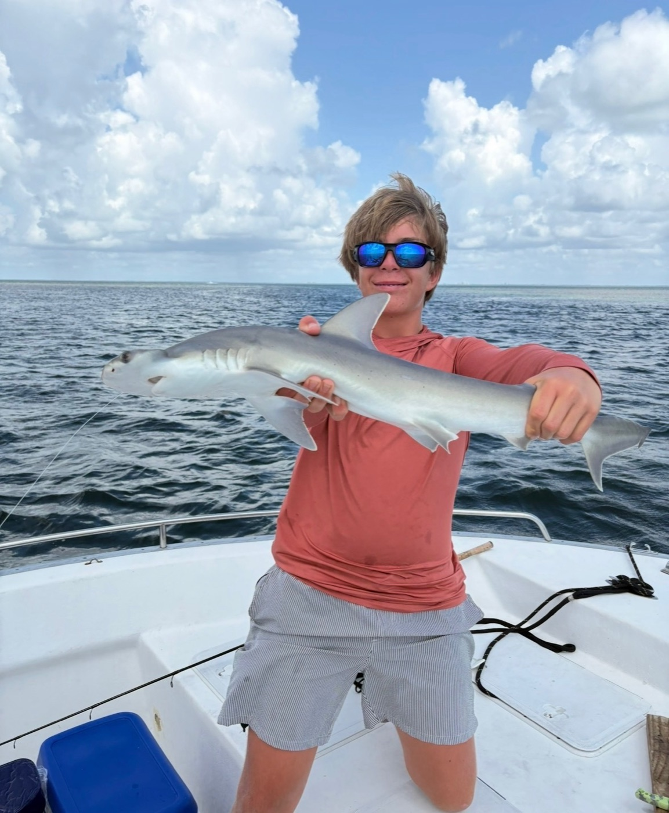
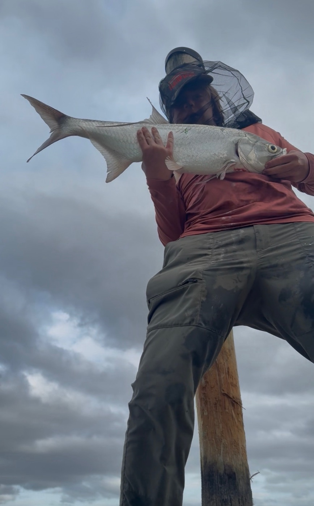
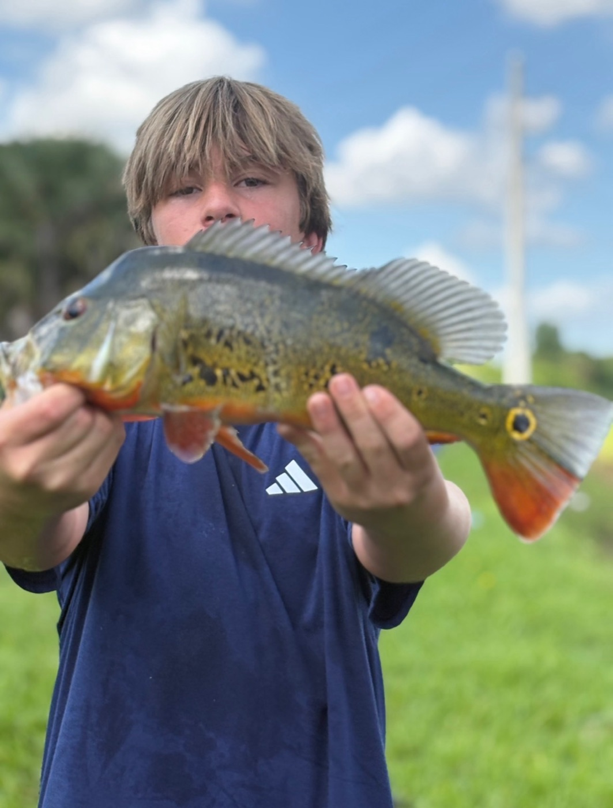
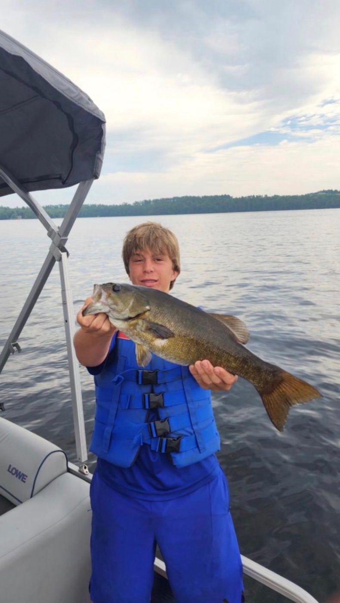
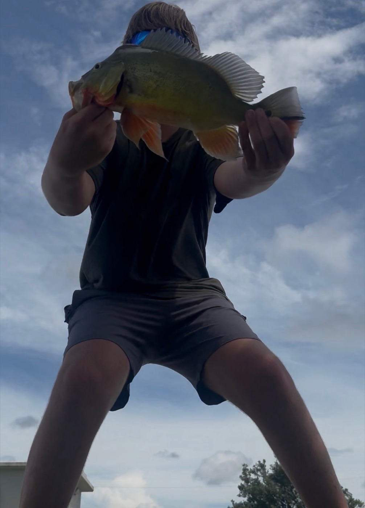

The greatest fisherman to ever cast a line. Fish don't get caught by Samuel. They surrender.
Go Fishing With Samuel See the Trophy Wall Book a CharterMost people go fishing. Samuel goes catching. Some anglers sit by the water for hours and go home with nothing but a sunburn. Samuel walks up to a canal, casts once, and pulls out a tarpon like it owed him money. Lakes, canals, open ocean: it doesn't matter. Bass, peacock bass, tarpon, arowana, even sharks. If it swims, Samuel has probably caught it.
The fish talk about him. Down in the canals, they tell stories about a guy with a fishing rod and a two-handed grip of pure steel. They call him the Cheesy Beans Baconator, and they swim the other way when they hear him coming. It doesn't help.
A small sample of Samuel's catches. The full collection would crash the internet.




Experts studied the trophy wall for weeks. Here's what they found.
Lands the lure exactly where the fish is hiding. Every time. Scientists can't explain it.
Can wait out any fish. The fish gets bored first. The fish always gets bored first.
Two hands, full control, perfect photo angle. A textbook trophy hold.
He caught a shark. From a boat. While smiling. Let that sink in.
Pick a spot, cast, and set the hook when it bites. Then hold Reel to fight the fish, but keep the tension in the green zone. Too much and the line snaps. Too little and it shakes free. When a fish runs or jumps, let go!
We interviewed the locals. They were not happy.
"I've dodged hooks for years. Then Samuel showed up. I didn't even see it coming."— A very surprised silver arowana
"We have a group chat about him. It's just the word RUN over and over."— The canal bass community
"Honestly? Getting caught by Samuel is an honor. Ten out of ten."— A fish who has accepted its fate
Want to fish with the legend himself? Samuel runs fishing charters right off the docks.
📞 (305) 338-8548Call or text to book your trip.